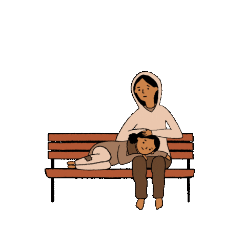

Poverty and Homelessness
Poverty
The word poverty comes from the Latin word pauper, meaning poor. So poverty can be defined as a state of being extremely poor. We generally think that being poor means not having enough money to buy the necessities. But if we look at the broader aspect poverty can mean many things. Like it could also mean mental poverty/illness.
Mental Poverty

So you might be wondering why I compared Mental illness with poverty. For this, we have to first look at the definition of mental illness. Mental health disorders refer to a wide range of mental health conditions — disorders that affect your mood, thinking, and behavior. Examples of mental illness include depression, anxiety disorders, schizophrenia, eating disorders, and addictive behaviors. Many people have mental health concerns from time to time. But a mental health concern becomes a mental illness when ongoing signs and symptoms cause frequent stress and affect your ability to function.
Let's be honest guys most of us face mental illness from time to time although it is minor so we get recovered from it quickly. I am a student and I can tell thousands of points on how students face mental illness. Try to relate things given below this may help you in understanding the problem and you may be able to cure your problem.
- The most important thing that first leads to mental poverty is being at the top. Let us together see how it happens.
First of all, if we see from our childhood we can clearly find that being at the top is given the most importance
Here I am not saying only being top at education field but being in top at any field. But the thing is that is this what we really desire?
Let's see a practical example that will help us to understand the mentality of today's human being
. Let's say that two boys Vinod and Ajay are good friends and Ajay is slightly better in studies than Vinod, both of their conditioning is done
in such a way that both want to be at the top. Let's say that Ajay scores 90 marks in exams whereas Vinod scored 85 marks in exams and the class topper
scored 98 marks but here we can see that Ajay shows his superiority by saying his parents that see Vinod scored 85 and I scored 90. Even I have to sadly
say that most of the parents also have the habit to ask the marks of others and then compare it with your marks. Do you know why students have such a mentality?
They do this so that they can satisfy themselves that they are great and secondly they want some fame like they want that people should know that they are intelligent
or at least to prove themselves intelligent than other fellow members.
So you might be thinking how this is mental poverty, Yes this is mental poverty as you are considering your success by taking others as your reference frame like if he or she scores less than me then at least I can be proud of myself that I scored more than them. than him/her. Here the mind is devoid of thinking what is right and what is wrong.
So now what's the solution to this big issue. I would say that people should change their mentality in such a way that it is like I don't care what's others marks, I just want to give my best. Now I can add many this regarding this topic but I want that you should also give some time to analyze the problem and try to figure it out on your own way of how can you resolve this big issue. - The second problem is the most common mental illness from which most of us are suffering most of the time. This is the
inability to control our brain. Sometimes we may have sudden emotional ups and downs and sometimes we may also get lost
in our own imagination. Like, let me relate this topic with the student's life. The first thing to notice is that when
we study or do any other thing we often get distracted by mobile phones, the noise inside the home, unrealistic thoughts
running in the brain, etc. People often say that technology (generally for mobile phones and laptops) is making us distracted
and dull. But here we must not rely on what others say. Let me say my point of view. I feel like it is the inability of the
person to control his/her brain according to the way they want. This is the same as not having sufficient skills
to control the brain. Thus it can be also classified as a kind of poverty.
So what's the solution to this. You might be wondering how can you control the brain and always make it function the way you want. There is a technique called yoga or meditation. I know most of you know this but you never felt interested or got time to do this. Let me tell you that yoga is very essential just like brushing our teeth and bathing daily is essential. You never say that today I am not feeling interested in brushing my teeth so I am escaping it today in a similar way yoga is essential for our well-being although you are escaping it by not doing.
I know many of you would say that you cannot focus while doing meditation. Regarding this, I want to say that you just need some practice. I can assure you within a month you will do yoga like a pro. Even I was not able to concentrate properly in the starting but after a month of practice, I was able to do that. So this is not a problem it can be easily solved if you practice it daily.
-
What will others say? Another most common issue with people. In context with students, it
is like what would society say if I don't score good grades. And most of the time you are
also pressured thinking this. This is one of the most common reasons that why people commit suicide.
So its solution is simple. I think in today's world people don't have the time to think that why you are not getting good grades. I think it is just your parents who will scold you and then after some time, they will also forget about this matter. Like even you also don't remember in which class you scored less and in which class you scored high marks right. All the memory fades away with time. And even if you don't fulfill anyone's expectations then will they put you in jail? No, not at all right? So be calm and be relaxed don't worry about stupid matters.
Global Poverty

Nowadays we are getting more self-centered. The only thing that matters to us is
ourselves, some may give importance also to their family members. Is this where we are
heading towards, A world full of selfishness. Were people intelligence work at a lower level
just thinking about themselves and their families.
So now I guess many of you might
be thinking that I am saying that being selfish is bad. No, not at all. Let me explain this
using an example. Ajay is the son of a shepherd. Now daily he goes with his father to take
care of sheep and he also feeds the sheep. Ajay's life is whole about sheep stuff. So he doesn't know
that there are other things that also exist and can make him lead the life of a king. In the same way, we
also don't know what are the possibilities that we have got by being human. I won't tell any. It is best that you
find it on your own by analyzing the things around you.
Now let's talk about global poverty
The thing is that poverty is reducing at a slow rate all over the world. I am saying slow because we all are doing less than our true potential, Here we are lacking because everyone is getting self-centered nowadays. Although there are some great human beings who are trying to reduce the poverty rate and also trying to provide a big help to people, but still I feel that reducing poverty is not an individual effort or only the effort of government and NGO's. It will only vanish when all citizens come together and try to create a massive help.
So now many of you might be thinking that you have your own problems, So you want to solve it first and then solve it for others. In this, I want to say that just at least give a try to solve others problem, then whatever be your problem won't worry you. You would think like I don't care whatever my problem is.
Homelessness
Homelessness such a big issue. Homelessness constitutes the worst violation of the human right to adequate housing. According to the Census of 2011, India has more than 1.7 million homeless residents, of which 938,384 are located in urban areas. These figures, however, grossly underestimate the real numbers of the homeless. India also has the highest number of street children in the world but there is no official data on their numbers or adequate schemes to respond to their special needs and concerns.
Estimated Number of Homeless People in Different Cities across India
- Delhi: 150,000 - 200,000
- Chennai: 40,000 - 50,000
- Mumbai: 200,000 (including Navi Mumbai)
- Indore: 10,000 - 12,000
- Vishakhapatnam: 18,000
- Bangalore: 40,000 - 50,000
See don't overlook the above given data. Just see how alarming this is. We have to take some big steps to overcome these issues.